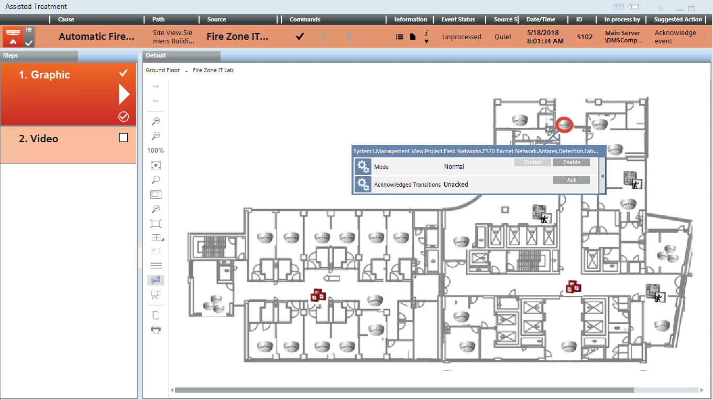

Executing a Graphic Step in Assisted Treatment
- You are in the Assisted Treatment window and the operating procedure includes a graphic step that you want to do.

- From the Steps list, select the [graphic] step.
- A graphic of the facility displays in the Default tab.
- The symbols of the alarmed objects show a colored circle and the Status and Command window.
- Check the status of the danger management objects on the graphic.
NOTE: If there are multiple graphics associated to the event source, you can show them using the arrow buttons in the toolbar of the Graphics application. - You can issue control commands from:
- The Commands column of the event bar above the graphics
- If available, the icon included in the symbol (see Danger Management Object Symbol)
- The Status and Command window
- The Operation and Extended Operation tab in the Contextual pane (see Advanced Layout)